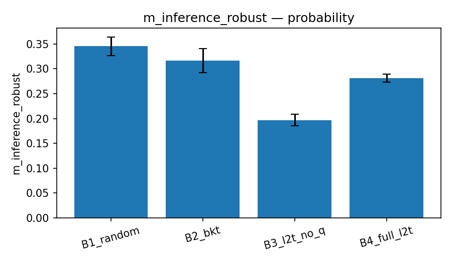
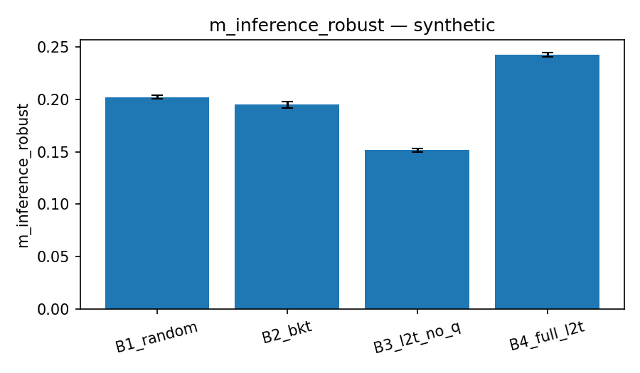

timestamp: 20260514_201101
config_path: /home/nt/projects/article/l2t_simulation/experiments/configs/medium.yaml
config: {'n_students': 1000, 't_steps': 100, 'master_seed': 42, 'method_seed': 1, 'n_bootstrap': 10000, 'synthetic_ensemble_k': 30, 'behaviour_proportions': {'honest': 0.6, 'guesser': 0.15, 'copier': 0.1, 'help_seeker': 0.15}, 'retention_intervals_days': [1, 3, 7, 14], 'forgetting_lambda': 0.05, 'prereq_perturbation_eps': 0.1, 'n_jobs': -1}
environment: {'python': '3.12.13', 'platform': 'Linux-7.0.3-arch1-2-x86_64-with-glibc2.43', 'git_hash': '51799ce3ce8e6639b4accdc2c2cab14256f55905', 'packages': {'numpy': '2.4.4', 'scipy': '1.17.1', 'pandas': '3.0.3', 'matplotlib': '3.10.9'}, 'timestamp': '2026-05-14T20:11:01'}
{'metric': 'm_robust', 'subsample': 'guesser+copier', 'n_b3': 2054, 'n_b4': 0, 't': None, 'p_value': None, 'cohen_d': None, 'confirmed': False, 'note': 'insufficient low-q transfer observations to evaluate'}
{'metric': 'm_robust', 'comparison': 'L2T (B3+B4) vs Random (B1), pooled methodologies', 'n_b1': 10740, 'n_l2t': 5179, 'mean_b1': 0.4809475984046613, 'mean_l2t': 0.8787797367377711, 't': 73.75396299235423, 'p_value': 0.0, 'cohen_d': 1.1350274246746541, 'confirmed': True}
{'m_transfer_b3_vs_b2': {'n_b2': 31000, 'n_other': 31000, 'mean_b2': 0.7464072580645161, 'mean_other': 0.7669959677419355, 't': 8.06901736527487, 'p_value': 3.606294120064781e-16, 'cohen_d': 0.06481190713038691, 'confirmed': False}, 'm_transfer_b4_vs_b2': {'n_b2': 31000, 'n_other': 31000, 'mean_b2': 0.7464072580645161, 'mean_other': 0.7681008064516129, 't': 8.509215712636827, 'p_value': 8.948002731205993e-18, 'cohen_d': 0.06834766534190752, 'confirmed': False}, 'm_retention_7d_b3_vs_b2': {'n_b2': 31000, 'n_other': 31000, 'mean_b2': -0.21839112903225807, 'mean_other': -0.22891532258064515, 't': -6.207929145157436, 'p_value': 0.9999999997298684, 'cohen_d': -0.049863286818476196, 'confirmed': False}, 'm_retention_7d_b4_vs_b2': {'n_b2': 31000, 'n_other': 31000, 'mean_b2': -0.21839112903225807, 'mean_other': -0.22875806451612904, 't': -6.1084698032697435, 'p_value': 0.9999999994940646, 'cohen_d': -0.049064410160035016, 'confirmed': False}}
{'m_mastery_b2_vs_b1': {'mean_b1': 0.32402347164141043, 'mean_other': 0.3647623741417593, 't': 19.98770844003239, 'p_value': 6.748237755470989e-89, 'cohen_d': 0.16054513759501632, 'lower_is_better': False, 'n_b1': 31000, 'n_other': 31000, 'confirmed': False}, 'm_transfer_b2_vs_b1': {'mean_b1': 0.7521532258064516, 'mean_other': 0.7464072580645161, 't': -2.2667560342105637, 'p_value': 0.9882957153575326, 'cohen_d': -0.018207022605842987, 'lower_is_better': False, 'n_b1': 31000, 'n_other': 31000, 'confirmed': False}, 'm_retention_7d_b2_vs_b1': {'mean_b1': -0.22270564516129032, 'mean_other': -0.21839112903225807, 't': 2.5354208369852738, 'p_value': 0.0056168332226796324, 'cohen_d': 0.020364990231687235, 'lower_is_better': False, 'n_b1': 31000, 'n_other': 31000, 'confirmed': False}, 'm_efficiency_b2_vs_b1': {'mean_b1': 0.0032402347164141045, 'mean_other': 0.003647623741417593, 't': 19.987708440032375, 'p_value': 6.748237755473358e-89, 'cohen_d': 0.16054513759501615, 'lower_is_better': False, 'n_b1': 31000, 'n_other': 31000, 'confirmed': False}, 'm_inference_robust_b2_vs_b1': {'mean_b1': 0.20669296349300365, 'mean_other': 0.19873727133819233, 't': 4.4971591020528825, 'p_value': 3.4706596819433476e-06, 'cohen_d': 0.07016967522052794, 'lower_is_better': True, 'n_b1': 8215, 'n_other': 8215, 'confirmed': False}, 'm_mastery_b3_vs_b1': {'mean_b1': 0.32402347164141043, 'mean_other': 0.37590176816140886, 't': 26.006912666392857, 'p_value': 1.3056057936554915e-148, 'cohen_d': 0.20889254938725968, 'lower_is_better': False, 'n_b1': 31000, 'n_other': 31000, 'confirmed': True}, 'm_transfer_b3_vs_b1': {'mean_b1': 0.7521532258064516, 'mean_other': 0.7669959677419355, 't': 5.947634742371643, 'p_value': 1.3674891392306915e-09, 'cohen_d': 0.047772551863249385, 'lower_is_better': False, 'n_b1': 31000, 'n_other': 31000, 'confirmed': False}, 'm_retention_7d_b3_vs_b1': {'mean_b1': -0.22270564516129032, 'mean_other': -0.22891532258064515, 't': -3.6523701012342458, 'p_value': 0.9998699775669208, 'cohen_d': -0.029336542616169227, 'lower_is_better': False, 'n_b1': 31000, 'n_other': 31000, 'confirmed': False}, 'm_efficiency_b3_vs_b1': {'mean_b1': 0.0032402347164141045, 'mean_other': 0.0037590176816140884, 't': 26.006912666392843, 'p_value': 1.3056057936558322e-148, 'cohen_d': 0.20889254938725954, 'lower_is_better': False, 'n_b1': 31000, 'n_other': 31000, 'confirmed': True}, 'm_inference_robust_b3_vs_b1': {'mean_b1': 0.20669296349300365, 'mean_other': 0.15304014879878075, 't': 41.128897477036205, 'p_value': 0.0, 'cohen_d': 0.6417387761141489, 'lower_is_better': True, 'n_b1': 8215, 'n_other': 8215, 'confirmed': True}, 'm_mastery_b4_vs_b1': {'mean_b1': 0.32402347164141043, 'mean_other': 0.3781540670045917, 't': 27.423859682934253, 'p_value': 6.905322131669463e-165, 'cohen_d': 0.22027374170442748, 'lower_is_better': False, 'n_b1': 31000, 'n_other': 31000, 'confirmed': True}, 'm_transfer_b4_vs_b1': {'mean_b1': 0.7521532258064516, 'mean_other': 0.7681008064516129, 't': 6.3960090418661455, 'p_value': 8.031130666985912e-11, 'cohen_d': 0.0513739809026204, 'lower_is_better': False, 'n_b1': 31000, 'n_other': 31000, 'confirmed': False}, 'm_retention_7d_b4_vs_b1': {'mean_b1': -0.22270564516129032, 'mean_other': -0.22875806451612904, 't': -3.5559987062701777, 'p_value': 0.9998115868593394, 'cohen_d': -0.028562468944284863, 'lower_is_better': False, 'n_b1': 31000, 'n_other': 31000, 'confirmed': False}, 'm_efficiency_b4_vs_b1': {'mean_b1': 0.0032402347164141045, 'mean_other': 0.003781540670045917, 't': 27.42385968293425, 'p_value': 6.905322131669463e-165, 'cohen_d': 0.22027374170442743, 'lower_is_better': False, 'n_b1': 31000, 'n_other': 31000, 'confirmed': True}, 'm_inference_robust_b4_vs_b1': {'mean_b1': 0.20669296349300365, 'mean_other': 0.2436395075211296, 't': -25.691846268607556, 'p_value': 1.0, 'cohen_d': -0.40087274378640064, 'lower_is_better': True, 'n_b1': 8215, 'n_other': 8215, 'confirmed': False}}
{'violations_b3': 0, 'violations_b4': 0, 'n_b3': 31000, 'n_b4': 31000, 'h4_confirmed': True}
InvariantReport(theory_first=True, no_spoiler=True, transfer_gate=True, n_states=16, n_transitions=24, n_traces_checked=5000, seconds=0.2683252029964933)





